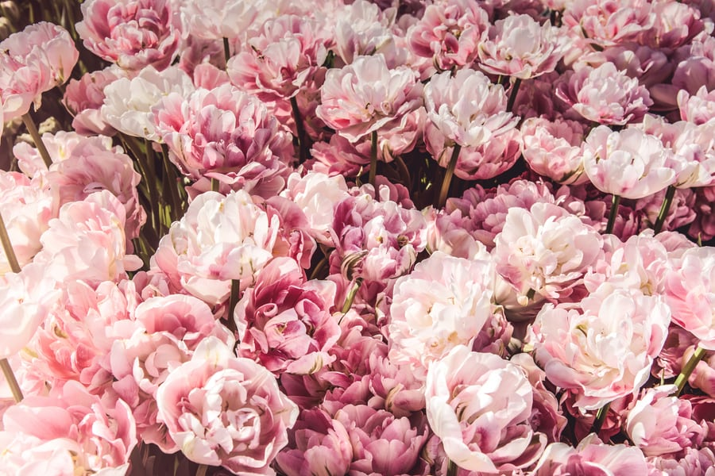

hello web
꽃이란
- Dry Flower
- 꽃말
Dry Flower
피어 있는 상태 그대로 말린 꽃.
생화에는 없는 독특한 색조가 있어 장식으로 쓴다.
꽃말은 19세기 유럽 영국을 중심으로 식물학, 정원 조성 등이 발달하면서 유행했는데, 당시에는 직접 말할 수 없는 메시지를 꽃을 통해 전달하는 경우가 많아 꽃말 사전을 가지고 다니기도 했다고 전해진다. 꽃말은 국가별로 달랐으나 이후 차츰 정리가 됐으며 한 꽃에 여러 개의 꽃말이 붙는 경우도 있다. 꽃말은 꽃의 모양, 특성 등에서 유래한 것이 많으며 신화나 전설 등에 등장하는 꽃 이야기에서 유래된 것도 있다.

ㄱ
· 개나리: 희망,기대, 달성
· 국화: 빨간 국화는 진실, 노란 국화는 짝사랑·실망, 하얀 국화는 성실·진실이라는 의미를 가지고 있다.
· 금잔화: 겸손, 인내, 이별의 슬픔
ㄴ
· 나팔꽃: 기쁨, 결속
· 능소화: 명예, 영광, 그리움, 기다림
ㄷ
· 달맞이꽃: 자유로운 마음
· 데이지: 명랑, 순수한 마음
· 동백꽃: 진실한 사랑, 겸손한 마음, 그대를 누구보다도 사랑합니다
ㄹ
· 라일락: 사랑의 싹 , 첫사랑, 젊은 날의 추억
· 리시안셔스: 변치 않는 사랑
ㅁ
· 맨드라미: 시들지 않는 사랑
· 모란: 부귀
· 무궁화: 섬세한 아름다움
· 물망초 : 날 잊지 마세요, 진실한 사랑
ㅂ
· 백목련: 이루지 못할 사랑
· 백합: 변함 없는 사랑, 순결
· 벚꽃: 순결, 절세미인
· 비단향꽃무: 영원한 아름다움
ㅅ
수국의 꽃말은 진심, 변덕, 처녀의 꿈이다. (출처: 게티이미지 코리아)
· 산세베리아: 관용
· 샤프란: 후회 없는 청춘
· 수국: 진심, 변덕, 처녀의 꿈
· 수련: 청순한 마음
· 수선화: 자기애 자존심 고결 신비
ㅇ
· 아네모네: 배신, 속절없는 사랑
· 에델바이스: 소중한 추억
· 은방울꽃: 섬세함
ㅈ
· 자목련: 믿음
· 작약: 수줍음
· 장미: 장미는 색깔별로 꽃말이 다르다. 빨간 장미의 꽃말은 아름다움·불타는 사랑·기쁨이며 흰 장미는 순결·존경·비밀, 분홍 장미는 행복한 사랑·사랑의 맹세, 노란 장미는 우정·평화·질투·이별·시기라는 꽃말을 가지고 있다. 이 밖에도 파란 장미는 희망·기적·불가능함의 의미를 담고 있으며 주황 장미는 수줍음·첫사랑, 보라색 장미는 불완전한 사랑 이라는 꽃말을 가지고 있다.
· 재스민: 사랑스러움
· 접시꽃: 열렬한 연애
· 제비꽃: 흰색은 순진무구한 사랑을, 보라색은 사랑을, 노란색은 수줍은 사랑을 의미한다.
· 진달래: 사랑의 기쁨
ㅊ
· 채송화: 순진, 천진난만, 가련함
· 천일홍: 매혹, 변치 않는 사랑
· 철쭉: 사랑의 즐거움
ㅋ
· 카네이션: 모정, 사랑, 존경, 감사
· 칸나: 존경, 정열, 해피엔딩
· 코스모스: 소녀의 순결, 순정
ㅌ
다양한 색의 튤립 (출처: 게티이미지 코리아)
· 튤립: 튤립의 대표적인 꽃말은 영원한 사랑의 고백이며 빨간색은 사랑의 고백, 보라색은 영원한 애정, 노란색은 헛된 사랑, 흰색은 실연이라는 꽃말을 가지고 있다.
ㅍ
· 패랭이꽃: 순결한 사랑, 재능, 거절
· 팬지: 나를 생각해 주세요
· 프리지아: 순결, 천진난만
ㅎ
· 해바라기: 숭배, 기다림
· 히아신스: 겸손한 사랑, 유희
[네이버 지식백과] 꽃말 (시사상식사전, pmg 지식엔진연구소)